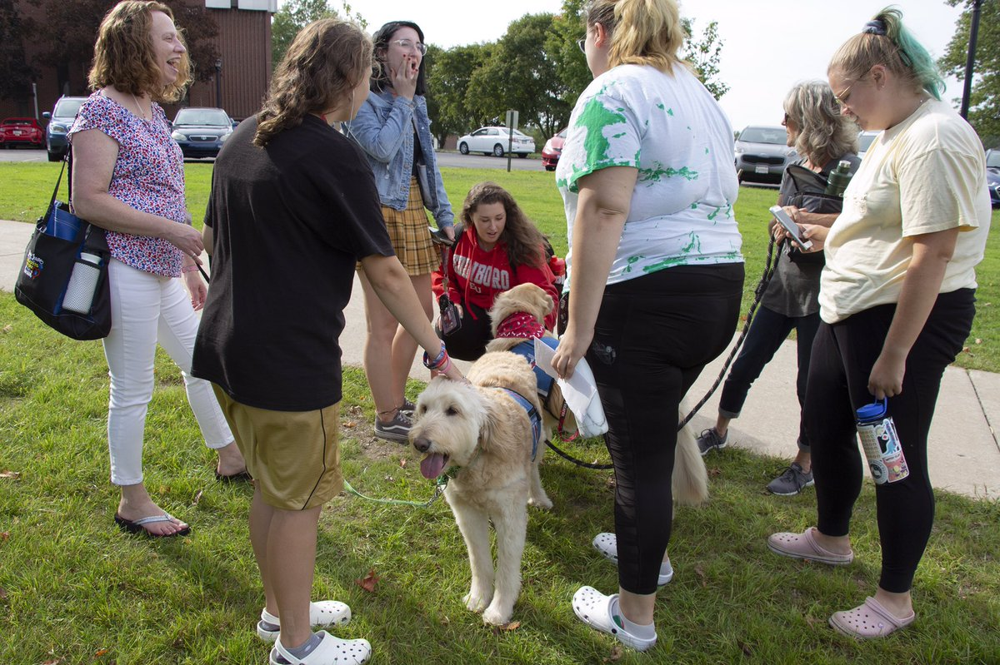

SJSU PAC serves the students and animals of our community by providing life-saving programs for dogs and cats, cultivating compassion, and strengthening the human-animal bond.
We hope to positively impact the San Jose State Community by providing the community with a source for emotional support, fun, and lots of love!
We hope that our animals can help students with their overall health and empower them to achieve their full potential as they work to earn their degrees at SJSU!
The well-being of our animals reflects the well-being of our community, we engage minds, hearts and hands to provide care for dogs and cats in the SJSU Community.
We are starting off with a limited number of pets that are available for adoption to the community. We hope to grow to offer many more pets as our business continues to grow.

Respect ○ Care ○ Community
Mental Health Benefits from Having a Pet
How Pets Can Improve Our Mental Health in times of Trauma
Pets Can Relieve Lonliness